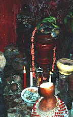

In reading this presentation, I invite you to a moment of
reflection. At the present time we should look towards the
past as a reminder of what the future should be. Our ancestors
were enslaved for centuries. They suffered the de-humanization
and re-humanization strategies of the colonial Spanish power
as established in Cuba. Their basic human right of religious
freedom was outlawed. Abolishment of slavery ending in 1886
was indeed a turning point towards the right direction. Cuba’s
republican era presented a Constitutional right of religious
freedom. Yet, our religion remained stigmatized as a primitive
cult, never to be recognized as a religion up to 1959. What
has really changed during the Castro regime?
I
feel compelled to say, nothing much has changed. By 1965 many
of our priests and priestesses were subjected to forced labor
camps for rejecting participation in the newly formed Conjunto
Folklorico Nacional. Our religion was to be forcefully sold
as folklore to tourist. The 70s were a period of religious
repression where many were taken to jail and had their religious
belongings confiscated. Later our people were forced to request
government permits every time to engage in religious practice.
Ordinations of minors were outlawed, and practitioners could
not hold a government job in an overnight atheist country.
Again
our religion was forced underground in many respects. Religious
counseling, a basic human right of speech, was also restricted.
Religious advice that may be perceived as conflictive with
governmental interest became punishable. Priests were humiliated
in Cuban prisons for years. Not one single organization has
ever spoken of them. We do not know how many are still in
Cuba’s prisons.
Suddenly
a new possibility came in the 80s.
The
exodus of the labeled Marielito’s shocked South Florida,with
thousands of new arrivals many of whom came from Castro's
prisons and mental institutions. Under the new stereotype
our priests and priestesses were also considered Escoria-Scums.
Our community rushed to their assistance and integrated them
without seeking outside resources and media glorifications.
It was our duty to do this because they are part of our religious
community.
Little
did they know that their religion in the US would soon be
viewed as organized crime and be targeted by animal rights
activists. By 1985 our religion in South Florida was experiencing
the wrath of law enforcement for practicing animal offerings.
Ordination rites to the priesthood were being raided; our
sacred rooms and religious icons were damaged, our priests
were charged with animal cruelty, and described in the media
as an unwelcome cult. When the first Church of the Lukumi
Babalu Aye tried to open its place of worship in the City
of Hialeah in 1987, it was met with a unanimous opposition
of City politicians, joined by the Christian community. Politicians
proclaimed that they would not allow this cult in their city.
The Christians paraded in front of the media singing hymns
and waving placards saying "Christ for Hialeah only",
and called us devil worshippers. The new Catholic policy in
Miami became anti-syncretic. Our people were no longer welcomed
in their churches.
Cuba
was ready for another challenge. Negotiations were on their
way with Nigeria, Africa, the birth land of our faith. The
ooni ofIle Ife, a pope-like figure of the Yoruba faith, expressed
his interest to visit Cuba and meet with the religious descendents,
the Santeros (a colonial misnomer). Cuba welcomed the ooni
disguised as cultural exchange. Cuba’s interest was not
just a new form of religious exploitation; they were looking
for deals on Nigerian oil. Cuba allowed our senior Ifa priests
to establish an organization named Ifa
yesterday, Ifa today, Ifa tomorrow. The purpose of
the organization was to establish an apolitical exchange.
Once the ooni left Cuba, government intervention caused the
organization to collapse and a new government cultural organization
emerged, the now called Asociacion
Cultural Yorubade Cuba.
Plagued
by decades of government manipulations, our religion in Cuba
has been presented as one in support of the regime, and as
a syncretic cult. Unlike its counterpart in the US, the Catholic
Church of Cuba continues to promote syncretism in order to
display popular support for their faith. The Cuban church
attracts our people through humanitarian aid and syncretic
tolerance. At one point, they even invited our Bata drummers
to play at one Church using it as propaganda.
The
trend of the 90s is most interesting. In June 1993, the first
Church of the Lukumi Babalu Aye won in the US Supreme Court
with a unanimous decision. Our religious practices are finally
recognized and the Church has re-opened in the city of Hialeah.
On the other hand, our priests are not recognized in Cuba.
They cannot travel to the US with a religious visa, while
Catholics and others can. This has provided a foundation to
a new phenomenon, "las mulas", the mules; these
are a new breed of persons that travel to Cuba as couriers
supplyingCuba’s religious and general material needs.
We
had the Guantanamo experience.
On that highly populated military base filled with our priests
and practitioners, their religious belongings were disposed
of, and only Christian missions were permitted. Those arriving
at the shores of South Florida were forced to leave their
religious belongings behind by US Officials. Not one word
has ever been publicly spoken of such violations. We now face
the rising trend of flying to Cuba for ordination rites and
other ceremonies: many have had the "irreligious" belongings
disposed of on return by US Officials and Bahamian Officials.
No other religion has reported a similar incident.
The
Cuban Catholic Church has been engaged in a millionaire’s
restoration process of their assets. The government has not
granted the right to form an apolitical Lukumi Church in Cuba.
Similar to colonialism with the Cabildos, the government only
grants token cultural associations with restrictive parameters
that serve government interest.
The
Vatican and the Cuban Church in my point of view are challenged
by the implementation of a Redemptive Movement. In religious
politics this means that a process of re-colonialism is now
present, where religion attempts to change the people over
a long period of time, and avoids changing the political order.
To do this, they must make numerous concessions and out-live
the existing political structure. The reward is a new opportunity
for Cuba’s Catholic Church to re-position itself in the
future political and social power structure. The Church can
easily accomplish this goal because it is a State and a religious
entity.
In conclusion, I present my theory on "when the wall
comes down" and the movement towards a new democratic
Cuba. Although the Lukumi/Ayoba represents the overwhelming
majority of the Cuban people, our political limitations are
severe. Presently, this provides the Cuban Catholic Church
with an open playing field to re-colonialize Cuba. A redemption
movement would require a popular centralization source, which
the Church can provide and maintain by sponsoring syncretism.
The infrastructure is provided by the established Churches
throughout the national territory.
Concessions
have been made by the Cuban government, which allows the Church
to open numerous social work centers and organize humanitarian
aid. The Vatican in this respect can negotiate with the US
government and acquire concessions based on a viable peaceful
transition towards democracy. This places the Church in a
unique position benefiting from both Countries as mediators.
The Church will then have a direct influence in the re-shaping
processes of the present and future Political and Social order.
If
my theory is correct, the Catholic Church of Cuba will secure
its longstanding power base in Cuba’s future, thanks
to the religious fervor that was preserved by our Lukumi/Ayoba
community during decades of atheist rule. When the wall comes
down, our religious community will be mislead into the belief
that the Pope and Church delivered democracy.
The
questions at this juncture are: Will the Lukumi of Cuba, which
is in the majority today, have an equal representation in
the political and social order in a new Democratic State?
Will other religions have an equal representation as well?
It
is my belief that during these next two years Cuban Government
and Church relations will deliver important changes. Already
we see the outspoken Catholic priests in the US and in Cuba
curbed by the Vatican. A new breed of clergy are playing a
supportive role in the redemptive movement. I predict in this
theory that we can expect Immigration laws and applications
to be more restrictive for the purpose of containment. A block
of institutionalization attempts of our faith in Cuba will
persist. This will be in hopes that our community would remain
under control through the Catholic power structure. A feeling
of commonality, return to traditions, reconciliation of all
Cuban people’s as Christians, and Afro-Cuban support
during the Papal visit next year, is already part of the propaganda.
My
proposal for a peaceful democratic Cuba is as follows: A re-conciliation
of the Cuban people cannot be carried out by rules of marginalization.
The assumption that Afro-Cubans are truly syncretic is erroneous.
To believe that present-day Cuba is primarily Christian is
an obvious error.
I
propose that all religious denominations in the US with adherents
in Cuba first begin to practice democracy here. A religious
counsel of denominations should be formed in the US. The council
should engage the present and future concerns from the standpoint
of equal representation for all religions. The setting of
a foundation for religious freedoms for all is a requirement.
It’s
my belief that a council of churches for equal representation
can be a powerful God loving statement of hope and believable
reconciliation in principle. I challenge all ministers of
God, regardless of their denominations, to take this step
forward so that together, we can all transform, and birth
a new peaceful democratic future for Cuba. I pray that "when
the wall comes down" this time, it will be with respect
for all faiths.